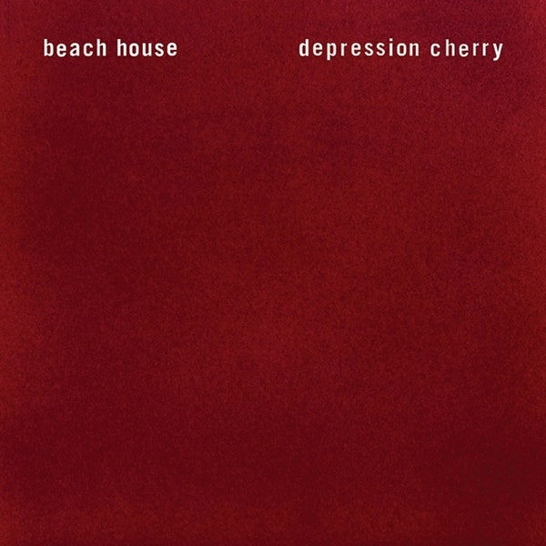
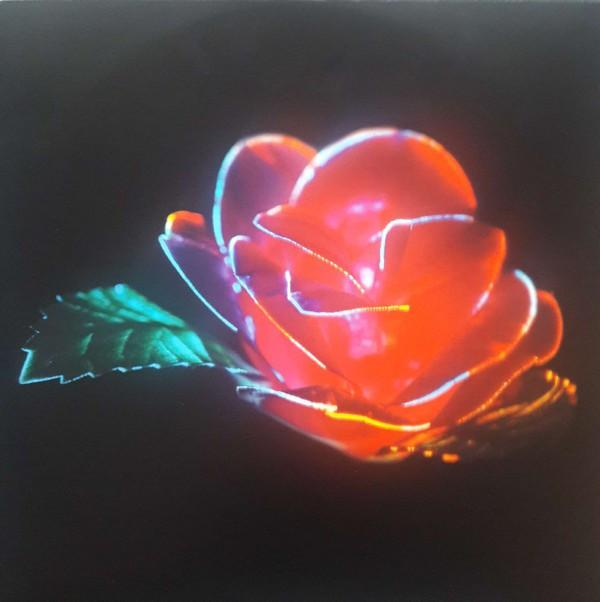

Depression Cherry, by Beach House
 | Depression Cherry: | |
|---|---|
| 1. | Levitation |
| 2. | Sparks |
| 3. | Space Song |
| 4. | Beyond Love |
| 5. | 10:37 |
| 6. | PPP |
| 7. | Wildflower |
| 8. | Bluebird |
| 9. | Days of Candy |
About the Album:
Depression Cherry is the fifth album by Beach House, the vinyl comes encased in a red velvet sleeve. Depression Cherry was released in 2015, and was one of two albums released by Beach House that year, the second release Thank Your Lucky Stars came out just two months after Depression Cherry. This album evokes a dreamy environment where one is compelled to reckon with the reality of our world and the way earth doesn't stop spinning for us to enjoy our moments in a timeless plane of space. This album forces me to see my life, struggles, or relationships from a clear-cut viewpoint, with emotional undertones of both hope and longing. Of this magnificent tracklist, if I had to pick a favorite it would be a tie between PPP & 10:37, these songs are truly worth a listen and I would recommend them to anyone regardless of their musical biases. This album is perfect on vinyl, especially on a quiet day at home when it's partly sunny and I'm just spending the afternoon painting and drinking tea.
About the Artist:
Victoria Legrand and Alex Scally make up this incredible duo. Hailing from Baltimore, Victoria and Alex began making music together in the early 2000s and have been growing strong in popularity ever since. Victoria Legrand spoke of the meaning and direction behind Depression Cherry as an album that explores love, pain, loss, getting older, and letting go. Victoria & Alex are often confused as being a couple but like most dynamic duos, they are simply artistic soulmates.